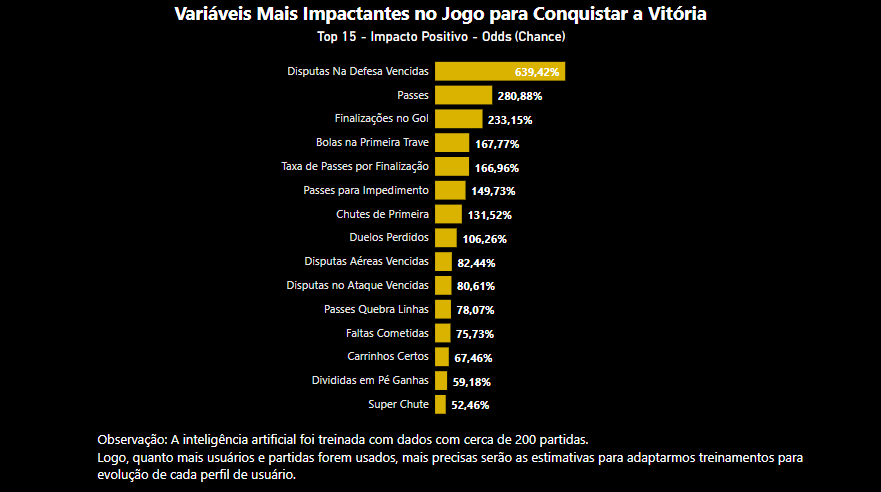

Últimos Posts sobre EAFC!
Confira alguns dos diversos visuais que podemos proporcionar!
✨ Personalização Completa: Ajuste cada detalhe conforme sua preferência e torne sua experiência ainda mais atrativa e única.
ü§ù Sua Opini√£o Importa: Suas ideias e sugest√µes s√£o muito bem-vindas! Compartilhe aplica√ß√µes do futebol real que podemos implementar no EAFC, unindo ambos os universos e elevando sua gameplay a um novo n√≠vel.
üöÄ Vamos Juntos: Envie suas sugest√µes agora mesmo e descubra como podemos transformar sua experi√™ncia no EAFC!
#
